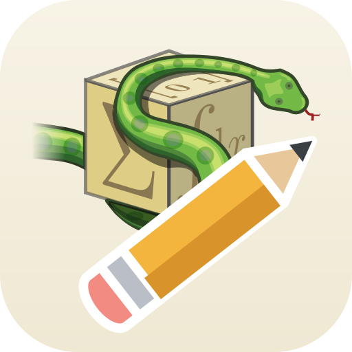
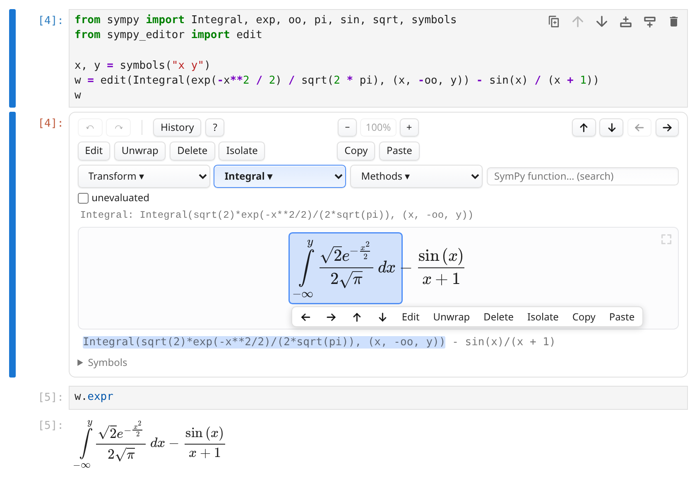
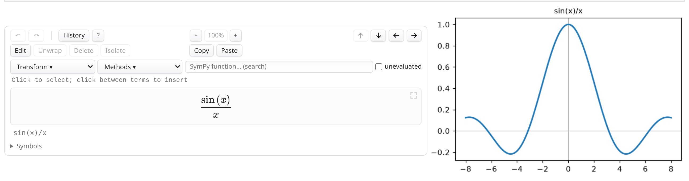
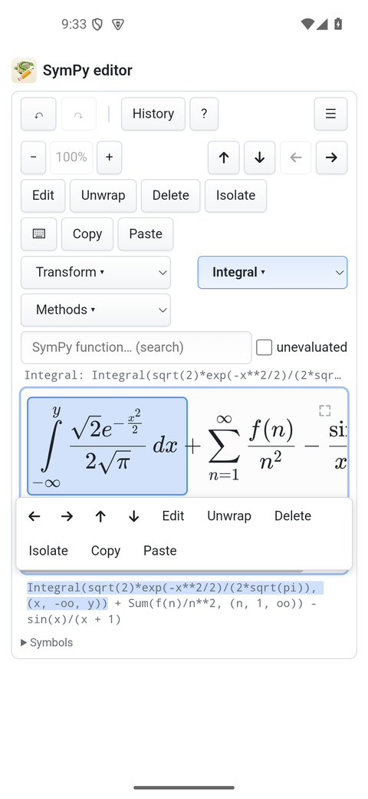
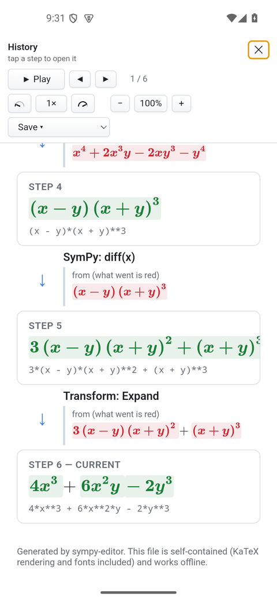

Free & open source · AGPL-3.0

SymPy EditorA click-to-edit editor for SymPy expressions: select a piece of a formula and change it in place - type over it, apply any SymPy function to it, pull it apart - with the formula drawn as mathematics the whole time, never as code. It runs in the browser, in a Jupyter notebook, or as an app.
Every edit is a step, and the steps make a history: what changed, what produced it, and what it became. The viewers further down are that history, and they do not need the editor at all - a derivation computed in Python is shown the same way. Here are 10 of them.

Try it
A short tour plays here: the editor at work, pressed and typed into for real. Stop it whenever you like, and the editor is yours — click any piece of the formula and change it in place. Python runs in your browser, and every result is computed on your device.
Use it
In a Jupyter notebook
The widget runs every edit in the kernel's own SymPy: w.expr
is the live, edited expression.
pip install "sympy-editor[jupyter]"from sympy import symbols, sin
from sympy_editor import edit
x = symbols("x")
w = edit(sin(x) / x) # click it, edit in place
w.expr # what it is now, live
w.on_change(lambda e: print("now:", e))A page of its own
One self-contained file whose edits run in the browser — or a local server that hands the result back to Python.
from sympy_editor import save_html, serve
save_html(expr, "expr.html") # one file, no server
new = serve(expr) # blocks until DoneA history from plain Python
The viewer on this page needs no editor: a list of expressions and a word about each step is enough.
from sympy_editor import History
from sympy_editor import save_history_html
steps = History([
Integral(x * sin(x), x),
(-x * cos(x)
+ Integral(cos(x), x), "by parts"),
(-x * cos(x) + sin(x), "the last integral"),
])
save_history_html(steps, "steps.html")In the notebook

w.expr follows.
examples/plot_alongside.ipynb in the repository).On a phone


Worked derivations
The quadratic formula, by completing the square
Completing the square, which is where the formula comes from.
The Gaussian integral
The trick worth knowing: square it, and the plane is polar.
The geometric series
Why 1/(1-x), in the two lines it takes.
Euler's identity
The most famous identity, through the series that make it obvious.
The derivative of x³ from first principles
What a derivative is, before any rule for computing one.
Partial fractions, and the integral they unlock
Splitting a fraction is what makes it integrable.
The eigenvalues of a 2×2 matrix
Where eigenvalues come from: a determinant that must vanish.
Gaussian elimination on a 3×3 system
A system of equations, solved the way it is solved on paper.
The harmonic oscillator, from its Lagrangian
Physics in one page: a Lagrangian in, an equation of motion out.
Least squares and the normal equations
Why the normal equations look the way they do.